このガイドは、ナレッジバンクアプリケーションを動作させるためのガイドです。 このガイドを実施する前にまず、Oracle JDKとNetBeansのインストールが完了している必要があります。 まだ、完了していない場合は、Java EE 7 徹底入門の第1章にある「1.4.1 Oracle JDKのインストール」と 「1.4.2 NetBeansのインストール」を実施して下さい。
ナレッジバンクのデータベースにはOracle Database Express Edition（Oracle XE）を使用します。
そのため、まずOracle XEをインストールする必要があります。
Oracle XE は無償で入手・利用することができます。
Oracle Database Express Edition 11g Release 2を次のURLから入手します。
URLにアクセスすると「Oracle Database Express Edition 11g Release 2」のダウンロードサイトが表示されます。ここでライセンス条項を確認後、「ライセンスに同意する」のラジオボタンをクリックし、 自身の環境に応じたZipファイルを入手してください。 Java EE 7 徹底入門ではWindows 環境（64ビット）で開発を進めるため、「Windows x64」のインストーラを入手します。 「Oracle Database Express Edition 11g Release 2 for Windows x64」のリンクをクリックしてファイルを入手してください。
サインイン画面が表示されたらOTNアカウントのユーザ名とパスワードを入力します。OTNアカウントを作成してない場合は「プロファイルの作成」からOTNアカウントを作成してください。
ファイルを入手するとダウンロード先に「OracleXE112_Win64.zip」ファイルが保存されます。
zipファイルを展開するとDISK1フォルダのなかにsetup.exeがありますので、そのファイルをダブルクリックしてインストーラを起動します。
インストーラファイルをダブルクリックすると以下の画面が表示されますので「次へ」ボタンをクリックします。
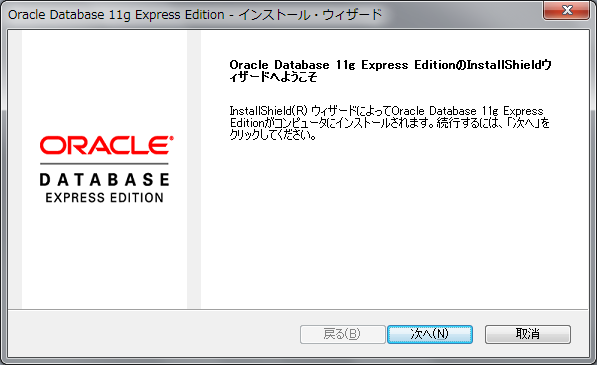
使用許諾条項が表示されるため使用許諾条項を確認し、「使用承諾条項に同意する」をチェックし、「次へ」ボタンをクリックします。
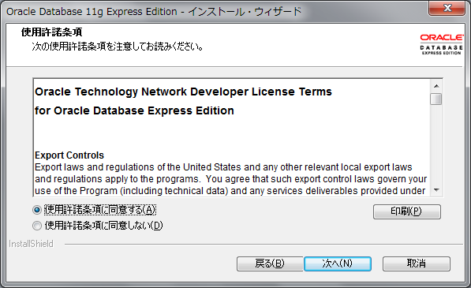
インストール先のフォルダが表示されるため問題ないことを確認し、「次へ」ボタンをクリックします。
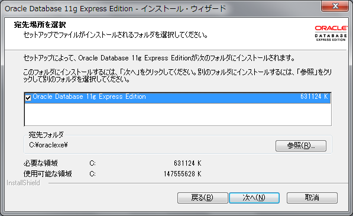
SYSTEMユーザのパスワード入力画面が表示されるため、パスワードを入力し、「次へ」ボタンをクリックします。
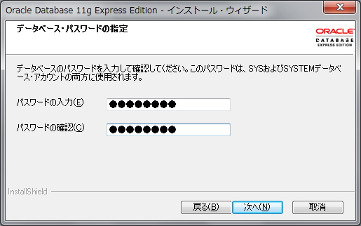
インストール内容を確認し、「インストール」ボタンをクリックします。
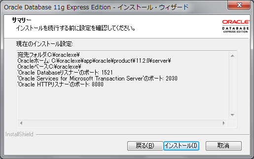
インストールが完了すると、完了画面が表示されるため、「完了」ボタンをクリックし終了します。
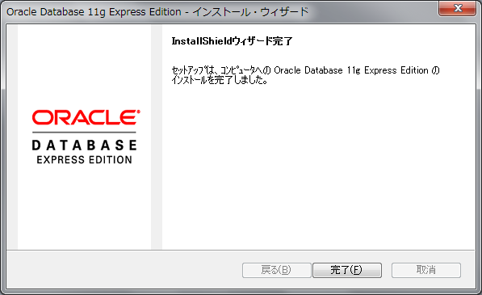
次にデータベースに接続するためのユーザを作成します。
なお、Oracle XEの管理コンソールはポート8080で起動するため、そのままではGlassFishのポートと競合してしまいます。
そのため、ユーザ作成と同時にOracle XEの管理コンソールのポートを8081に変更します。
「スタート」メニューから「すべてのプログラム」を選択し「Oracle Database 11g Express Edition」フォルダ内にある「SQLコマンドラインの実行」を起動します。
コマンドラインが起動したら以下のコマンド(青文字部分)を実行します。
SQL> connect system/******** （SYSTEMユーザに設定したパスワード）
SQL> create user 接続ユーザ名 identified by 接続パスワード;
SQL> grant connect, resource to 接続ユーザ名;
SQL> exec dbms_xdb.sethttpport(8081)
SQL> exit
GlassFishにデータベースへの接続設定を行います。
GlassFishとデータベースを接続するにはデータベースの種類に合わせたJDBCドライバーが必要です。 Oracle XEのドライバーは、Oracle XEをインストールしたフォルダのjdbcフォルダ「C:\oraclexe\app\oracle\product\11.2.0\server\jdbc\lib」にあるojdbc6.jarまたは、 以下のサイトからojdbc7.jarをダウンロードします。
取得したojdbc6.jar（ojdbc7.jar）をGlassFish のインストール先にある「glassfish\lib」ディレクトリへコピーします。
コネクションプールの作成はGlassFishサーバーを起動してから管理コンソール上で行ないます。まずはNetBeansを起動し、サービスタブのサーバ内にあるGlassFishを右クリックしてGlassFishを起動します。
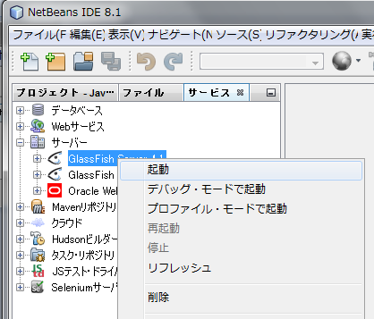
起動が完了したらGlassFishサーバを右クリックして「ドメイン管理コンソールの表示」を選択し管理コンソールにログインします。
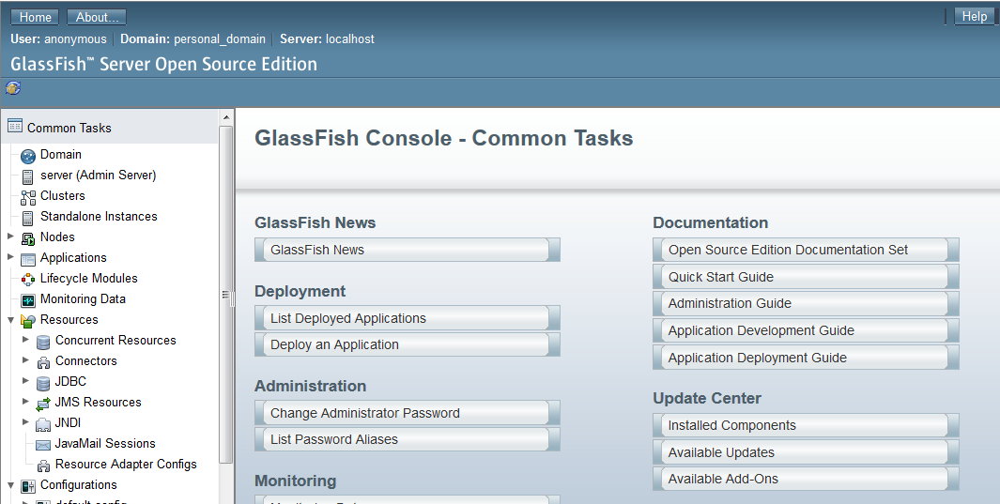
コネクションプールを作成します。左側のメニューから［Resources > JDBC > JDBC Connection Pools］を選択します。
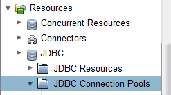
「New...」ボタンをクリックして新しくコネクションプールを作成します。
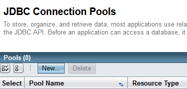
［Pool Name］に任意のコネクションプールの名前として「knowledgebankPool」、 ［Resource Type］に「javax.sql.DataSource」、 ［Database Driver Vendor］に「Oracle」を選択し、「Next」ボタンをクリックして次の画面へ遷移します。
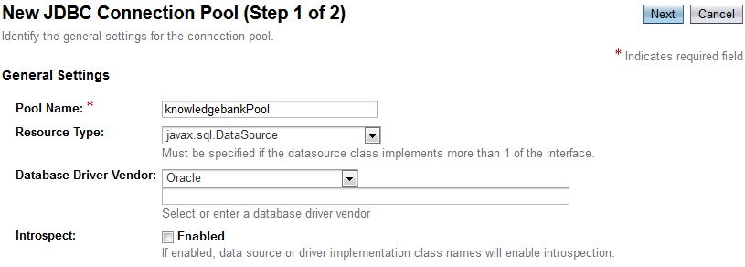
※注：
「Next」ボタンクをクリックしたタイミングで、下記のようなエラーが出ることがあります。(GlassFishの既知の問題が原因です)
その場合は、後述の対処手順でコネクションプールとJDBCリソースを作成したのち、次の「２－２．認証認可の設定」へ進んでください。
→ 対処手順へ
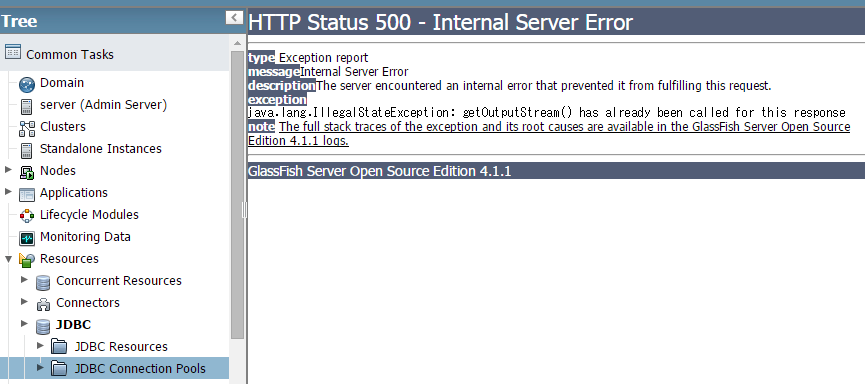
［Datasource Classname］に［oracle.jdbc.pool.OracleDataSource］が選択されていることを確認し、プロパティを設定します。 [User]にOracle XEをインストール時に作成した接続ユーザ、 [Password]に接続ユーザのパスワード、 [URL]に「jdbc:oracle:thin:@localhost:1521:xe」を設定し、「Finish」ボタンをクリックします。
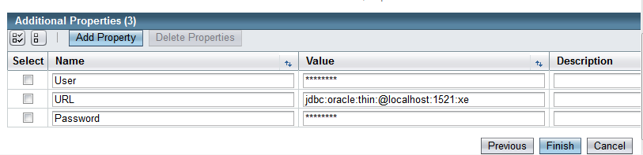
JDBCリソースを作成します。左側のメニューから［Resources > JDBC > JDBC Resources］を選択します。
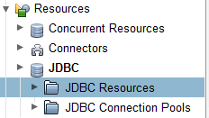
「New...」ボタンをクリックして新しくJDBCリソースを作成します。
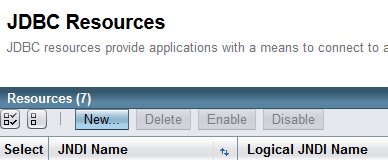
［JNDI Name］に「jdbc/eebook」、 ［Pool Name］に「knowledgebankPool」選択し、OKボタンをクリックします。
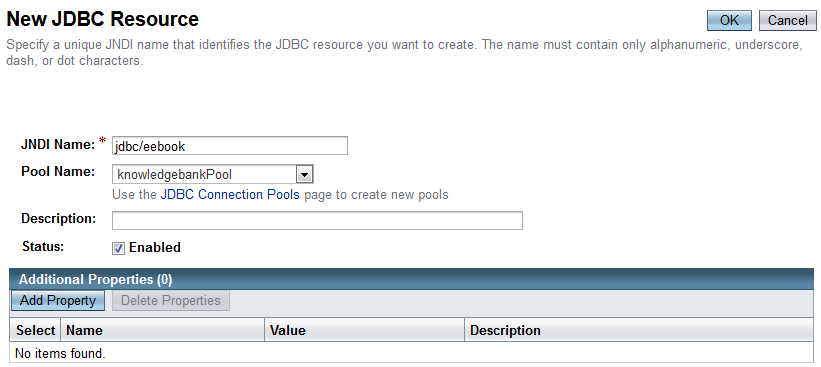
GlassFishに認証認可の設定を行います。
レルムを作成します。左側のメニューから［Configurations > server-config > Security > Realms］を選択し、「New...」ボタンをクリックします。
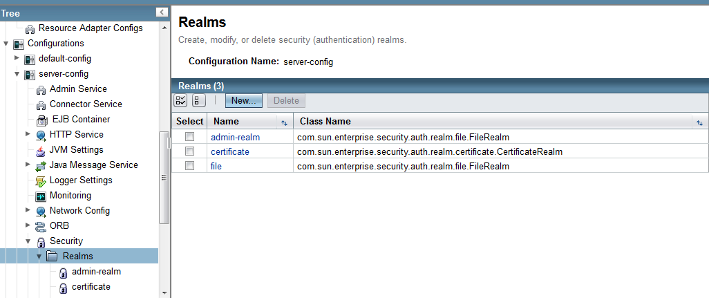
以下の項目を入力し、「OK」ボタンをクリックします。
| 項目 | 設定値 |
|---|---|
| Name | 任意（jdbc-realm など） |
| Class Name | com.sun.enterprise.security.auth.realm.jdbc.JDBCRealm |
| JAAS Context | jdbcRealm |
| JNDI | jdbc/eebook |
| User Table | account |
| User Name Column | user_id |
| Password Column | password |
| Group Table | account |
| Group Table User Name Column | user_id |
| Group Name Column | account_group |
| Password Encryption Algorithm | digest-algorithm |
| Digest Algorithm | SHA-256 |
| Encoding | Hex |
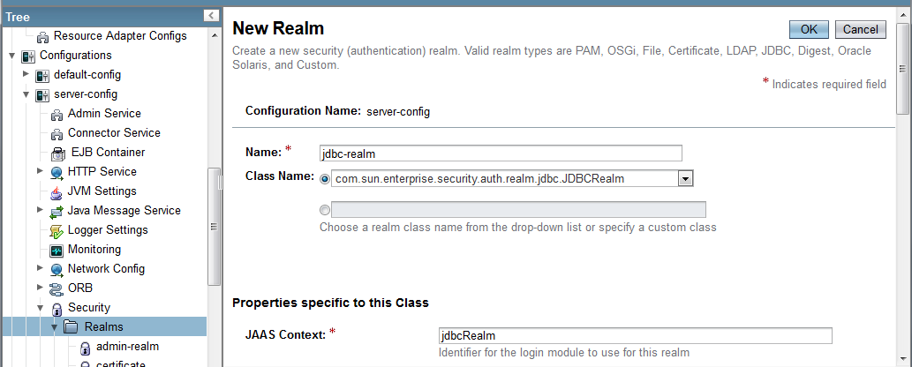
作成したレルムを設定します。左側のメニューから［Configurations > server-config > Security］を選択し、 [Default Realm]に作成した「jdbc-realm」を選択し、「Save」ボタンをクリックします。
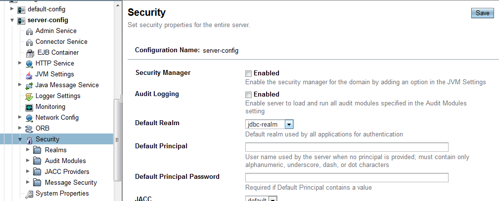
NetBeansを起動してサンプルアプリケーションを開きます。 ファイルから「プロジェクトを開く」をクリックします。
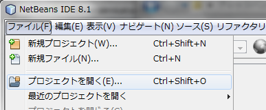
サンプルソースにあるすべてのプロジェクトを選択し、「プロジェクトを開く」ボタンをクリックします。
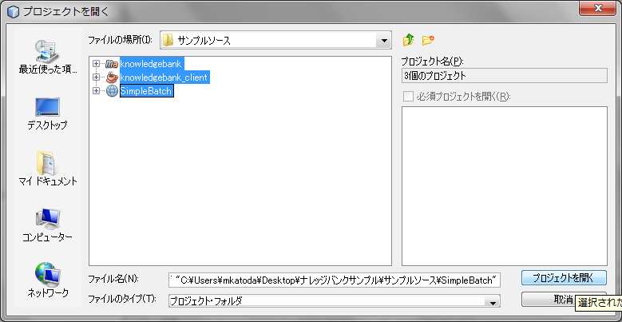
※注2：
GlassFish4.1.1ではJSFのConverterでEJBがインジェクトできない問題があるようです(GLASSFISH-21454)。
そのため開いたプロジェクトのknowledgebankプロジェクトのソースコードを修正する必要があります。
→ コード修正手順へ
knowledgebankを右クリックして、「実行」をクリックします。
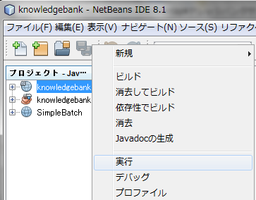
デプロイメント・サーバを選択画面が表示された場合は、GlassFish Serverを選択し、 永久に記憶をチェックしてから、OKボタンをクリックします。
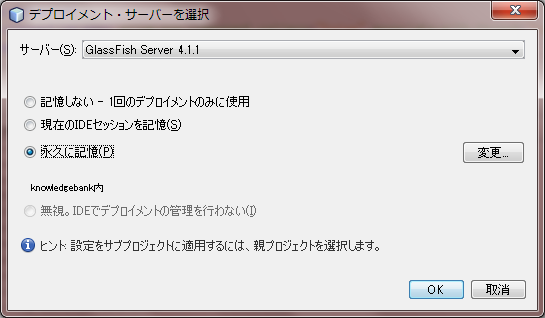
設定が完了していれば、ブラウザでナレッジバンクのサンプルアプリケーションが起動します。
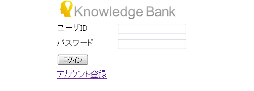
このまま「アカウント登録」のリンクから新しいアカウントを作成して利用することもできますが、本誌と同じ状態にするために、ログイン前にサンプルデータを登録します。
ダウンロードしたzipファイル内の「サンプルデータ」フォルダの中にあるファイル「data4JSF.sql」を、PC の任意の場所（例：c:\tmp）に展開してください。
「スタート」メニューから「すべてのプログラム」を選択し「Oracle Database 11g Express Edition」フォルダ内にある「SQLコマンドラインの実行」を起動します。
コマンドラインが起動したら以下のコマンド(青文字部分)を実行します。
注：これまで登録したデータは全て消去されます
SQL> connect 接続ユーザ名/接続パスワード
SQL> @c:\tmp\data4JSF.sql
SQL> exit
登録されているユーザIDは、"ichiro", "jiro", "hanako" の3人です。"ichiro"が管理者ユーザで、他の2名は一般ユーザです。
パスワードは3人とも共通で "J@vaEE7" です。
本誌 P300 に掲載されているデータを登録します。
ダウンロードしたzipファイル内の「サンプルデータ」フォルダの中にあるファイル「data4JPA.sql」を、PC の任意の場所（例：c:\tmp）に展開してください。
「スタート」メニューから「すべてのプログラム」を選択し「Oracle Database 11g Express Edition」フォルダ内にある「SQLコマンドラインの実行」を起動します。
コマンドラインが起動したら以下のコマンド(青文字部分)を実行します。
注：これまで登録したデータは全て消去されます
SQL> connect 接続ユーザ名/接続パスワード
SQL> @c:\tmp\data4JPA.sql
SQL> exit
登録されているユーザIDは、"chihiro.i", "yoshio.t" の2人です。パスワードはどちらも、"J@vaEE7" です。
既にデータがある状態から上記の手順でデータを入れ替えた場合は、GlassFishを再起動してください。
本誌 P532 の注釈欄で言及している手順はこちらになります。
ダウンロードしたzipファイル内の「サンプルデータ」フォルダの中にあるファイル「data4jBatch.sql」を、PC の任意の場所（例：c:\tmp）に展開してください。
「スタート」メニューから「すべてのプログラム」を選択し「Oracle Database 11g Express Edition」フォルダ内にある「SQLコマンドラインの実行」を起動します。
コマンドラインが起動したら以下のコマンド(青文字部分)を実行します。
注：これまで登録したデータは全て消去されます
SQL> connect 接続ユーザ名/接続パスワード
SQL> @c:\tmp\data4jBatch.sql
SQL> exit
jBatch用のテストページのURLは http://localhost:8080/knowledgebank/faces/batch_start.xhtml ですが、この画面へのアクセスはログイン不要です。
また、通常どおりナレッジバンクの画面にログインすることもできます。
登録されているユーザIDは、"ichiro", "jiro", "saburo" 他、合計11人です。パスワードはいずれのユーザも "J@vaEE7" です。
既にデータがある状態から上記の手順でデータを入れ替えた場合は、GlassFishを再起動してください。
GlassFishのツールである"asadmin"コマンドを利用して、コネクションプールとJDBCリソースを作成します。
「スタート」メニューから「プログラムとファイルの検索」ボックスに "cmd" と入力するなどして、コマンドプロンプトを起動します。
その後、GlassFishをインストールしたフォルダの配下にあるbinディレクトリ（例：C:\Program Files\glassfish-4.1.1\bin）に移動して、
以下のコマンド(青文字部分)を実行します。
C:\Program Files\glassfish-4.1.1\bin> asadmin create-jdbc-connection-pool --datasourceclassname oracle.jdbc.pool.OracleDataSource --restype javax.sql.DataSource --property user=接続ユーザ名:password=接続パスワード:url="jdbc\:oracle\:thin\:@localhost\:1521\:xe" knowledgebankPool
JDBC connection pool knowledgebankPool created successfully.
Command create-jdbc-connection-pool executed successfully.
C:\Program Files\glassfish-4.1.1\bin> asadmin create-jdbc-resource --connectionpoolid knowledgebankPool jdbc/eebook
JDBC resource jdbc/eebook created successfully.
Command create-jdbc-resource executed successfully.
CategoryIdConverter.javaに @Named（javax.inject.Named）と @RequestScoped（javax.enterprise.context.RequestScoped）を追加します。
@FacesConverter("categoryId")
public class CategoryIdConverter implements Converter {
@FacesConverter("categoryId")
@Named
@RequestScoped
public class CategoryIdConverter implements Converter {
index.xhtml(18行目)、entry.xhtml(25行目)、edit.xhtml(29行目)のconverter属性の記載を修正します。
converter="categoryId"
converter="#{categoryIdConverter}"
ソースコードを修正したら、次の「・ナレッジバンクの起動」へ戻ります。
→ ・ナレッジバンクの起動